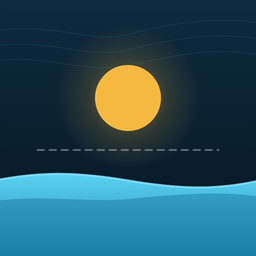

An app that works out the smartest time to make drinking water on a small island — so the island wastes less fuel and never runs dry.
Rishik · Neekin · Srihan · Ednit · Gowtham
DreamHacks 2026 · Track 2 — AI, Automation & Logic
Rain fills the tanks. When the rain stops, a machine turns seawater into drinking water.
That machine is the hungriest thing on the island for electricity.
By day that power is free — it’s sunshine. At night it’s a diesel generator, and the diesel comes by boat every few weeks.
The tank is basically a battery for water. You can fill it whenever you like — so you should fill it when power is free.
Most islands run the machine on a timer set to the middle of the night, because that’s when electricity is cheap on the mainland.
On a solar island that’s backwards — the middle of the night is exactly when there is no sun.
This is a real problem. In 2011 Tuvalu ran down to a few days of drinking water and had to declare a state of emergency.
Their machine wasn’t too small. The problem was that nobody could see what was coming.
How much water the island will use, 2 days ahead
The best hours to run the machine
Says why, in plain English
Spots problems early
We trained an AI on 2 years of water use. Then we tested it on days it had never seen before — real future days, not a shuffled deck.
| How it’s run | Diesel used | Cost | Fuel lasts | Result |
|---|---|---|---|---|
| AquaGrid | 15 L | $25 | 39 days | fine |
| Night timer | 70 L | $112 | 8.6 days | runs out |
| Fill when low | 79 L | $127 | 7.6 days | runs out |
Here’s the part that really matters. The island has 300 litres of diesel and the boat is 12 days away.
The other two ways run out of fuel before the boat arrives. Ours doesn’t.
what you see and tap — we drew every chart ourselves
we trained it on a laptop, then packed it inside the app
the phone grabs its own sun and rain forecast — free, no sign-up
an open AI model that explains things in plain English
There is no server anywhere. An app that needs the internet to decide when to make water would stop working exactly when an island gets cut off — which is when you need it most.
Normally an AI lives on a big computer and your phone asks it questions over the internet. We did the maths ahead of time for every situation the AI could ever face, and packed all the answers into the app.
We trained this. It makes every decision.
Only writes the words. Delete it and every number stays the same.
Orange above the dotted line means the sun alone can run the machine. The strip underneath is what it actually chose to do, hour by hour.
It knows how fast the tank should empty. So when the real tank drops faster than that, something is wrong — and it says so.
It saves the rain too. Rain off the rooftops gave 24% of all the water — so if rain is coming, it waits instead of wasting fuel.
And it stores sunshine. A battery carries midday sun into the evening, when everyone gets home and uses the most water.
Nobody would have spotted that leak for hours. The app found it in two.
Because on a real island, the internet is the first thing to go.
2 years of water use → a trained model
when to run, and spotting problems
weather, location, the language model
18 pieces, every chart hand-drawn
We didn’t just say it saves fuel. We ran three different ways of doing it — ours, the night timer, and fill-when-low — on the same weather, and compared them.
github.com/sbongula/aquagrid
We tested the AI on days it had never seen. We gave the leak detector a real leak and made it find it. And when we tried Reykjavík — where there’s barely any sun — it only saved 23%. We left that in, because a smaller honest number is worth more than a big one we can’t back up.
github.com/sbongula/aquagrid
sbongula.github.io/aquagrid